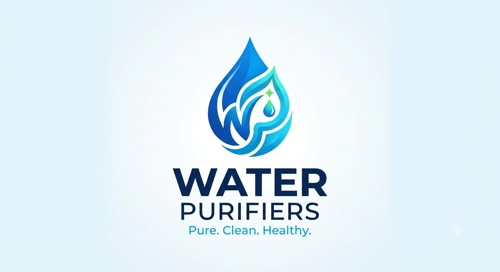

MYSORE · GOKULAM EXTENSION
Water purifier
services in Mysore.
Water purifier service, RO repair and filter care for all brands. Serving all of Mysore (Mysuru), especially Gokulam Extension. Call us 24/7, including weekends.
+91 89040 50495 Tap to call · Available 24/7
One place for all your purifier needs.
Service for RO, UV & UF water purifiers. Brand names identify the products we service; no brand affiliation is implied.
A LITTLE CARE GOES A LONG WAY
Water purifier service,
repairs & filter care.
Something not working quite right?
Tell us what’s happening. We’ll help you
find the next step.
Water purifier & RO repair
Leaks, low water flow or a purifier that won’t start? Call to discuss the issue and arrange service.
Get helpFilter & RO care
Discuss filter replacement, RO membrane care and the right maintenance for your purifier.
Ask about filter careRoutine servicing
Give your purifier regular attention. Call to plan a maintenance visit for your brand and model.
Plan a serviceNO COMPLICATED BOOKING
One call.
Let’s get it sorted.
Have your purifier’s brand and model handy.
We’ll take it from there.
- 01
Tell us what’s wrong
Call +91 89040 50495 and describe your purifier issue.
- 02
Discuss your service
Confirm your location, the work needed, charges and a suitable visit time over the phone.
- 03
Get your purifier cared for
Arrange the service your purifier needs, including on weekends.
WATER PURIFIER SERVICE NEAR YOU
Gokulam Extension.
And across Mysore.
Our main focus is Gokulam Extension, with water purifier servicing available throughout Mysore. Call with your location and purifier model to confirm a suitable service time.
Areas we serve
- Gokulam Extension — our main service area
- Palace Road, Mysore
- KR Market Mysore
- All areas across Mysore / Mysuru
BEFORE YOU CALL
A few helpful answers.
Do you offer water purifier service in Gokulam Extension?+
Yes. Gokulam Extension is our main service area. We cover all of Mysore, including Palace Road. Call +91 89040 50495 to confirm service for your location.
Which water purifier brands do you service?+
We service all brands, including Aquaguard, Aquapearl, Eureka Forbes and Kent. Call with your model details to discuss the service you need.
Are you available on Sundays and weekends?+
Yes. We offer 24/7 service availability, including weekends. Call us to confirm a visit time for your location.
How much will the service cost?+
Charges depend on the issue, your purifier model and any parts needed. Call us to discuss the details and confirm pricing before arranging your service.
How do I book a service?+
Tap any call button to open your phone’s dial pad, or call +91 89040 50495. Share your location, purifier brand and the problem you’re facing.
AVAILABLE 24 HOURS · 7 DAYS A WEEK
Your next service
is one call away.
Weekdays, weekends, whenever you need us.